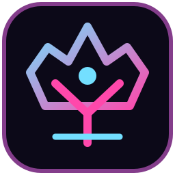

Sketch, rig and preview locally. Original asset approvals stay yours.
PLANNED
K9000LuHm-OS · Crown Cathedral
LOCAL UI · BRIDGE UNVERIFIED
--:--
PRIVATE · LOCAL FIRST · CANDIDATE
JACOB CREATOR · FAMILY SAFETHE CREATOR'S COCKPIT
One canvas. A whole universe of tools. Powered by your ideas.
LUHM-OS / K9000CREATE THE
CREATE THE
IMPOSSIBLE.
Your art, worlds and characters live here. Nothing uploads without an explicit action.
LUM / COMPANION STAGEApproved character artwork: not bundled yet
Rotoscope, storyboard and edit. FFmpeg adapter not connected.
PLANNEDLaunch the existing Godot scene through the native boundary.
ANDROID BRIDGECAMERA MATRIX
USB/UVC discovery is read-only. No camera feed or recording starts automatically.
Use the native Android bridge to enumerate candidate UVC devices.
UVC streaming, bandwidth budget, USB permissions and sync calibration require physical validation.
NOT CONNECTEDPROFESSOR'S HARDWARE LAB
Roles follow your private hardware canon; this screen does not publish its full inventory or device serials.
Photo and movie ingest first. Direct USB webcam and live HDMI output are not verified.
LIVE CAPTURE UNVERIFIEDScan originals to archival masters. Fully open-source SANE driver support needs a real Linux test.
SCANNER DRIVER UNVERIFIEDUVC candidate for recording; permission and streaming must be physically proven.
VIDEO STREAM UNVERIFIEDModel and USB Audio Class descriptors are not yet identified. Linux ALSA/PipeWire, Android routing and a real recording test remain pending.
MIC DRIVER UNVERIFIEDTransmitter or receiver mode, codec, microphone return path and pairing are unknown. Separate from the known HydraMotion speaker.
AUDIO ROUTE UNVERIFIEDCheck connected USB descriptors, without reading serials or opening the hardware.
SECOND-SCREEN MATRIX
Read-only display discovery. No silent screen recording, casting, or remote connection.
Android can report attached displays. Connected does not mean content is mirrored.
The second Samsung tablet is a separate Android device, not a passive HDMI monitor. An authenticated, consent-based connection is needed.
NOT PAIREDLinux XRandR/Wayland display and macOS screen roles are separate host adapters. Kernel and display changes require actual workstation evidence.
PHYSICAL PROOF PENDINGHEADLESS AI LAB
K9000 is the UI. LiteRT-LM is a candidate embedded engine, not an authenticated Edge Gallery service.
Local model adapter pending ABI, memory, thermal and model-rights proof. Meta Llama weights have a separate community license and are not bundled.
UNCONFIGUREDEdge Gallery is a reference app, not a proved headless API. Gmail, Docs, Cloud, Gemini, Play and OpenAI each need separate integration receipts.
NOT CONNECTED TO APPKAI · BLENDER FORGE
Private asset drafts first, rights-cleared GLB handoff to Godot, then a pinned npm presentation build. Everything stays local until the owner authorizes a release.
GParted remains an operator-only Linux app. Python 3 and SQLite maintain bounded metadata, hashes and rights receipts. No disk edits from WebView.
HEADLESS POLICYBlender headless import is an opt-in desktop job. Meshy's official DCC Bridge is a separate paid-network integration, not a Linux or public-build dependency.
NO PROVIDER CALLSRetain approved jQuery presentation hooks, the npm lockfile and MIT attribution. Community scripts cannot execute from the incoming plugin bay.
BUILD-TIME ONLYRe-use the current ChatGPT MCP presentation and K9000 native shell. No agent autostart, provider credentials, private model or unapproved assets in the public package.
CAST / CROWN STOPAllowlist a rights-cleared, family-safe GLB or source image. A filename, AI generation, paid license or UI button alone is not public-release permission.
No Blender, Meshy, npm or cloud job has been executed.
CREATOR VAULT
Original masters stay private. GitHub holds source; Google Drive is the designated durable binary server when explicitly linked.
This candidate contains UI code and placeholders only. Asset intake and export are pending.
SAFE DEFAULTWORLD PORTAL
Enter the native Godot scene. The action is only enabled when the verified Android bridge is present.
Shared world engine for Android APK and macOS DMG.
Native world interface unverified.